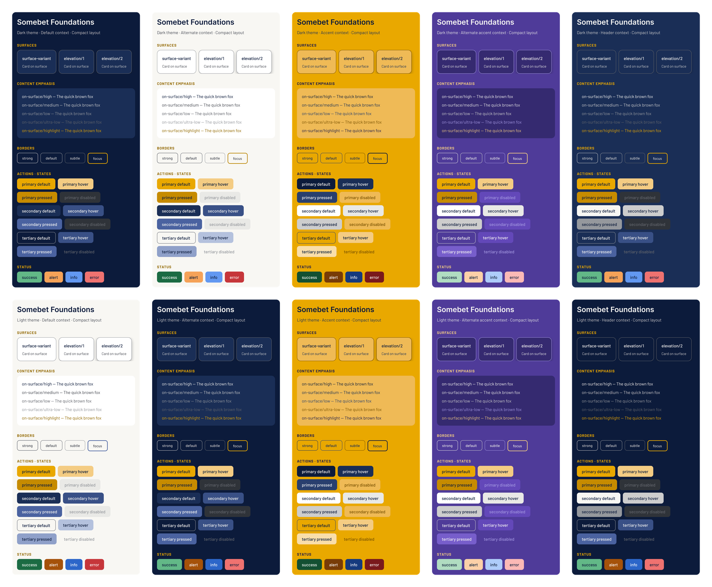
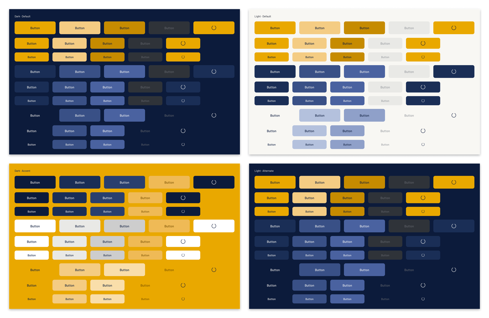
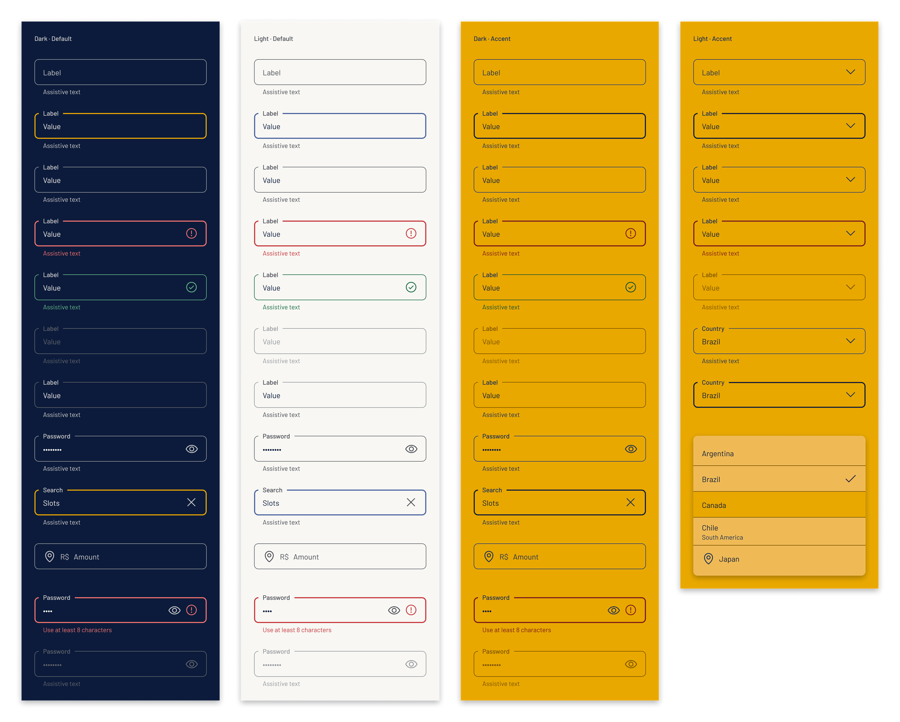
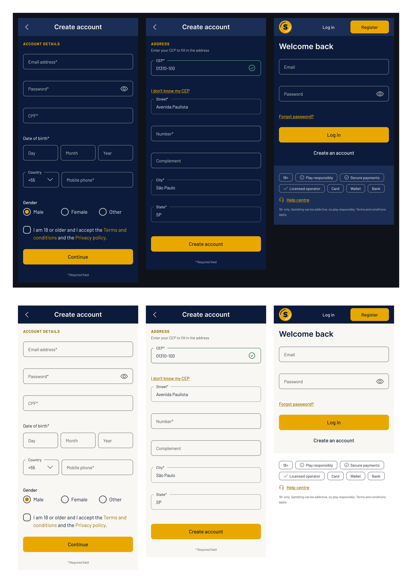

Case study · Design system build · October 2026
I rebuilt the registration and login UI of a regulated betting product as a themeable Figma library on native variables, proved it on six real screens and exported it to working CSS. I designed the system and paired with Claude: Claude Opus 5.5 for planning and review, Claude Sonnet 5.5 in Claude Code for the building, in reviewed phases.
This card is a quick preview. The full demo page has a working login form with validation, a select, all three button types and a card that switches context; its source and tokens are on GitHub.
The starting point
The source was a registration and login flow I designed at my previous employer: compliance-heavy, with identity data, address lookup and consent, live in a regulated market. Those screens drew on 68 distinct components and four typefaces, and they carried three generations of library at once: pieces from before componentization, from a first design system and from the current one. Each migration had left the previous generation in use, so one flow mixed component versions, naming schemes and typefaces.
That library was no longer available to me, so I set out to rebuild a clean version I could own, review and reuse.
One boundary came first. The original system's architecture could inform the design, but no token values, files or JSON were copied. The new system ships one fictional brand, Somebet, with its own palette, type and logo.
The audit covered the registration component set, the login section and the desktop examples. These were the findings that shaped the build:
| Finding | Evidence in the source file | Response in Somebet |
|---|---|---|
| Context baked into variants | Button Colour / Context with 5 values, Modal Colour, Modal Header Context | Context becomes a variable mode set on the container |
| Button layering and versioning | The base button has 7 axes and 720 combinations and is named after its revision; layout presets wrap it with another 240 | Base Button (45 variants) plus Button group (20); versions go in a changelog |
| Duplicated input | Two versions of the final input; one has a typo option (Suffix = On / Off / Of) | One Input with an instance-swap trailing slot |
| Typeface drift | Open Sans, Lato, Museo Sans and Roboto in one flow; one paragraph style resolves to two fonts | Two families per brand, bound to variables |
| Token naming | Four naming schemes, two of them holding the same value | One scheme: group/role/variant |
| Collapsed text hierarchy | High, medium and low emphasis all resolve to black; borders have no tokens | Four emphasis levels shared by text, icons and borders |
| Brand duplication | 22 brand token sets of about 350 tokens each, only 5–7% aliases | Brands as modes; everything above Primitives is an alias |
The architecture
Brand, theme, surface context and container size are independent questions, so each got its own collection with its own modes. Values flow down an alias chain; switching a mode at any level re-resolves everything below it. Components bind only to Context for colour, Layout for size and space, and Brand for font family and corner style.
on-surface/high becomes var(--on-surface-high), which is what makes a generated CSS file possible.The Context layer repeats Theme names on purpose. In the Default mode it maps one to one to Theme; Alternate, Accent and Header remap the same names to other surfaces. A component only ever references surface and on-surface, and every fill role has a content pair: X is the fill, on-X is everything placed on it.
The source repeated about 350 mostly raw values per brand, doubled for a light theme. Here a new brand sets about 80.
The trade-off is real. Theme mappings are identical for every brand, so a brand-specific exception has to become a Brand role. brand/highlight exists for exactly that: it is usually the primary colour, but a brand whose primary is red points it elsewhere so highlights never read as errors.
Accent and Alternate accent are the deliberate exception to the chain. They are strong, theme-independent surfaces, gold and vivid purple, so they look the same on a dark or light page and alias Brand roles directly instead of Theme slots. Brand gained five roles named by job for the second accent (brand/alt-accent/surface, /surface-raised, /hover, /pressed, /subtle), because defining a brand starts from its surfaces and how loud it is, not from a ramp of numbered steps.
That is where the ten surfaces in the title come from: five contexts (Default, Alternate, Accent, Alternate accent and Header) on two themes, Dark and Light. Every component was checked on all ten, each in its own 5 × 2 grid of test frames.

The components
With context handled by modes, the components could shed most of their axes. Icons became instance-swap slots, never variants. Country-specific compositions such as the CPF field, the CEP address lookup and the registration steps stay patterns built from library parts, not library components.
| Group | Components | Variants |
|---|---|---|
| Atoms | Icon (16 Phosphor glyphs, MIT), Button, Button group, Text link, Checkbox, Radio, Radio group | 90 |
| Fields | Input, Select, Select list item, Phone field, Date field | 21 |
| Feedback and navigation | Logo, Section header, Snackbar, Modal, Loading overlay, Site header, Trust footer, Card | 18 |


The build
This project was also a test bench for my AI-assisted design workflow. I wanted to refine how I split thinking from building, and to try the new Claude 5.5 model pair on real design-system work: Claude Opus 5.5 for judgement, Claude Sonnet 5.5 for execution. One question ran through every phase: how effective is Sonnet 5.5 at building in Figma from a written brief, and how hungry is it for context and usage? The answers are in the cost section below.
I split the work by kind, all in the Claude desktop app. In a Claude chat with Opus 5.5 at medium effort I ran the audit, made the architecture decisions, wrote a brief for each phase and reviewed the results. Claude Code, running Sonnet 5.5 at high effort with the Figma connection, did the building: the cheaper model at its most careful setting, for long, exacting runs. No phase started until I had signed off the one before it against written acceptance checks.
Five collections, scopes, code syntax, ten text styles, two elevation styles and a specimen page.
Check: counts match the spec, every alias resolves, specimen switches all modes cleanlyIcon set, Button, Button group, Text link, Checkbox, Radio, Radio group.
Check: variant counts as specified, every fill, stroke, padding and radius boundInput, Select, Select list item, Phone field and Date field, composed only from Input and Select instances.
Check: all states render in both container sizes, trailing-action swap worksSnackbar, Modal, Loading overlay, Site header, Trust footer, Section header, Logo.
Check: header renders in the Header context, modal as bottom sheet and dialogRegistration steps 1 to 3, an error state and Login at both sizes, rebuilt from instances only.
Check: theme and container size switch with no edits inside the screensA brand file, a theme layer, context classes and container-query layout CSS, plus a demo page that re-skins when the brand file is swapped.
Check: every CSS name equals the Figma code syntax; values checksummed against FigmaContrast was part of every check, measured across all ten theme and context combinations. In the final file, body text is at least 8.1:1, labels at least 6.4:1, button text at least 5.5:1, and error text and low-emphasis text at least 4.6:1.

What the review caught
My background is in software testing, and this is where it paid off. Building with an AI moves the risk from making to judging: the output arrives fast and looks finished, so the question is whether the checks actually test what matters.
Text link, Checkbox, Radio and Radio group were bound to Theme instead of Context. They passed "nothing unbound", but ignored context modes, which showed up as a dark-gold "Forgot password?" link on a navy card. All 78 were rebound. The acceptance checks now test which collection a component binds to, not only that it is bound.
In the Header context, secondary hover resolved to the header colour itself: 1.0:1 in Dark. Remapped, it is now 8.4:1 for hover and 4.6:1 for pressed. On the header, the secondary button later became an off-white button with neutral hover and pressed states.
Site header and Trust footer still had a Compact / Expanded variant axis, so a screen in a wide container kept the narrow header. They now follow the container's Layout mode, and the logo switches form through a string token, logo/form.
The first Expanded login put the form on a high-contrast Alternate card. I reserved Alternate for things that must interrupt (modals, sheets, promos) and made the login a raised card in the Default context. The form is the page's purpose, not an exception to it.
Reviewing the strong accent surfaces, the checkbox check stayed light on gold while the indeterminate dash turned navy. The check glyph and a footer icon were overrides bound to Theme. The earlier audit had skipped nested instances; the audit now walks instance overrides too.
The first Accent was a quiet purple tint of the page. I redefined it as gold in both themes, with a navy primary and a white secondary, and gave Alternate accent a vivid purple for a second offer on the same page, such as sportsbook next to casino.
On light surfaces, gold text reads better than its WCAG 2 ratio suggests, a known weakness of the formula with yellows and oranges. I still split the colour: links and labels use #936a00 (4.55:1), the radio dot and focus ring use a yellower #ba8600 (3:1, the non-text minimum). EN 301 549 checks the WCAG number, so that is what the system meets.
With every component on all ten theme × context combinations, a near-black disabled checkbox appeared on the light card and a near-white one on the navy header. Disabled fills now have their own Alternate and Header slots, like every other colour on those surfaces.
Renamed Site header and unpinned from the Header context, so a brand can keep it on the page surface. The logo stays outside the token system, but a string variable picks its variant per surface, so the gold-safe logo appears on Accent automatically.
The floating label hid the border with a background colour, which only works on one known surface: on a card, a block showed above the field. Browsers solve this natively, with a fieldset whose legend cuts a gap in the border. In Figma I rebuilt the border from pieces (corner, label, line, corner), so the gap follows the label. Fields now have no fill and work on any surface.
Every Input and Select now reserves one line for its assistive text, shown or not. An error appears in place instead of pushing the rest of the form down, and a long form gets a calmer rhythm. A two-line message still shifts the layout, which is rare enough to accept.
The read-only field had a filled background, so it looked more inviting to fill in than a real input. It now has no fill and the quiet Disabled border, but keeps readable text, which is the only difference from Disabled.
The proof phase logged thirteen library gaps in all, from labels that could not wrap to a missing Card component. I prioritised them, and the high and medium ones were fixed before export. Where the Figma Plugin API set a limit, I took the documented workaround and wrote the trade-off down: auto-layout direction cannot be bound to a variable, so the footer's support link and legal line now stack at both sizes.
Cost and time
I tracked every build session from Claude Code's usage panel. Dollar figures are the list-price estimate it shows, not what a Claude Pro subscription is billed.
The fix was procedural. From Phase 5 on, every checkpoint started a fresh session with a handover file, to keep context below 150k tokens. Phase 5 then built six full screens and a proof frame for $3.71 across three sessions, under half of Phase 4's single $8.77 session.
The part that does not shrink is the thinking. The audit and the architecture decisions took about 3.5 of the 12 hours, and that work recurs on any new project, because it is where the system is designed. Reviews during the build were deliberately light.
The design QA pass came after it and took about 7 hours over two days: a contrast audit of every component on all ten surfaces, a stronger Accent, a reworked field border, a working demo page and this write-up. I kept it on Claude Opus 5.5 at medium effort, the same as the planning, instead of handing it to Sonnet 5.5: review needs fidelity more than speed. It used up to 32% of a week's Claude Pro allowance, more than the whole build. Back-and-forth judgment costs more per hour than building from a brief, and it is also where most of the findings above came from.
What the CSS proves
The export is generated from the variables in the file, because the Variables REST API is Enterprise-only. It produces four files: a brand file (45 values), a theme layer (81 values for each theme), context classes (40 values for each of five contexts) and a layout file where Expanded applies through @container (min-width: 1024px). Components read --ctx-* variables only. The demo at the top of this page is built the same way: the card and header are painted entirely from those values. The full demo page loads the four exported files directly, unchanged; the code is in the somebet-ds repository.
| Figma variable | CSS | Dark · Default | Dark · Alternate |
|---|---|---|---|
Context / surface | --ctx-surface | #0c1b3b | #f8f7f3 |
Context / on-surface/high | --ctx-on-surface-high | #f8f7f3 | #0c1b3b |
Context / on-surface/highlight | --ctx-on-surface-highlight | #e9a800 | #936a00 |
Context / error | --ctx-error | #ef7270 | #c6363a |
Takeaways